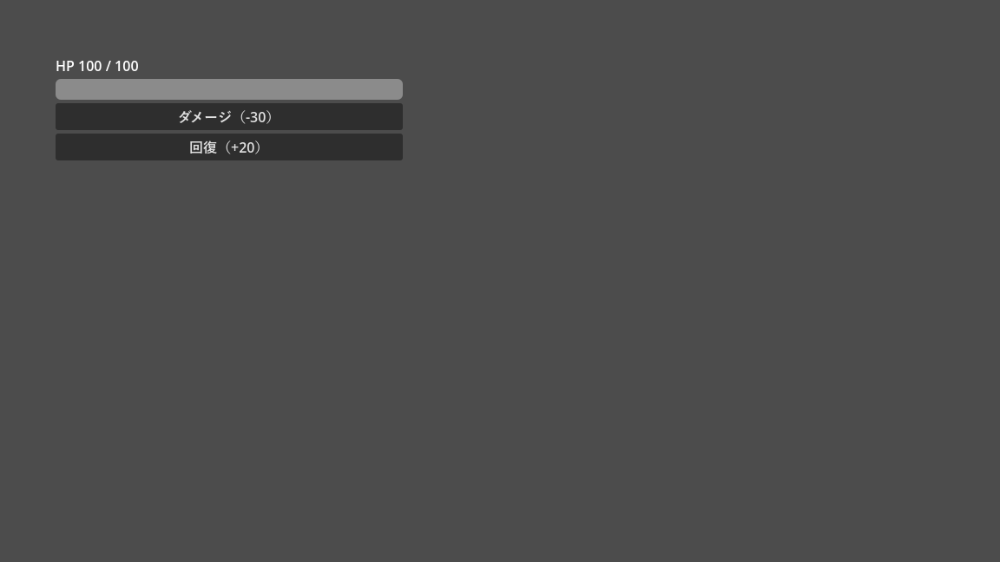

第 7 章 GDScript の応用
本章では、Godot のスクリプトで特に重要なシグナルと await を中心に、列挙型、関数オブジェクト、静的型付けの活用、エラーの扱い方を説明する。最後に、Python の経験者がつまずきやすい点をまとめる。サンプルは chapter07 フォルダーにある。
シグナル
シグナル（signal）は、ノードが「何かが起きた」ことをほかのノードに知らせる仕組みである。デザインパターンのオブザーバーパターンや、GUI プログラミングのイベントに相当する。
例えば、ボタンは押されたときに pressed シグナルを発行（emit）する。ボタンを押したときの処理を書きたいノードは、このシグナルに自分の関数を接続（connect）しておく。すると、ボタンが押されるたびにその関数が呼ばれる。ボタンの側は、誰が接続しているかを知らなくてよい。
Godot のノードには、多くのシグナルがあらかじめ定義されている。
シグナル |
発行されるタイミング |
|---|---|
|
ボタンが押されたとき |
|
タイマーが設定時間に達したとき |
|
物理的な物体が領域に入ったとき |
|
アニメーションの再生が終わったとき |
|
ノードがシーンツリーから取り除かれたとき |
エディターでシグナルを接続する
第 5 章 ノードとシーン の coin.tscn では、Area2D の body_entered シグナルを、エディターで coin.gd の _on_body_entered() に接続している。手順は次のとおりである。
シーンドックで
Coinノードを選び、インスペクターの右にある「シグナル」ドックを開く。シグナルの一覧から
body_entered(body: Node2D)をダブルクリックする。「メソッドにシグナルを接続」ダイアログで、接続先のノード（ここでは
Coin自身）を選び、「接続」を押す。
スクリプトに _on_body_entered(body: Node2D) という関数がなければ、自動で作られる。接続の情報はシーンファイルの [connection] に保存される。接続されている関数の行には、スクリプトエディターの左端に緑色のアイコンが表示される。
独自のシグナルを定義して使う
シグナルは自分で定義することもできる。次の Health は、体力を管理するだけのノードである。体力が変化したときと 0 になったときに、シグナルを発行する。
1class_name Health
2extends Node
3## 体力を管理するコンポーネント。体力が変化したときと 0 になったときにシグナルを発行する。
4
5## 体力が変化したときに発行する。
6signal health_changed(current: int, maximum: int)
7## 体力が 0 になったときに発行する。
8signal died
9
10@export var max_health: int = 100
11
12var current_health: int
13
14
15func _ready() -> void:
16 current_health = max_health
17
18
19func take_damage(amount: int) -> void:
20 if current_health <= 0:
21 return
22 current_health = maxi(current_health - amount, 0)
23 health_changed.emit(current_health, max_health)
24 if current_health == 0:
25 died.emit()
26
27
28func heal(amount: int) -> void:
29 current_health = mini(current_health + amount, max_health)
30 health_changed.emit(current_health, max_health)
シグナルは signal 名前(引数) で定義し、名前.emit(引数) で発行する。Health は、誰が体力の変化に関心を持っているかを知らない。体力の表示を更新するのか、効果音を鳴らすのか、ゲームオーバーにするのかは、シグナルを受け取る側が決める。こうしておくと、Health をプレイヤーにも敵にも使い回せる。
Health を使う側のスクリプトは次のとおりである。体力をプログレスバーで表示し、ボタンでダメージと回復を与える。
1extends Control
2## シグナル、await、enum、ラムダ式の例。
3
4## キャラクターの状態
5enum State { ALIVE, DEAD }
6
7const RESPAWN_SECONDS: float = 2.0
8
9var state: State = State.ALIVE
10
11@onready var _health: Health = $Health
12@onready var _bar: ProgressBar = %HealthBar
13@onready var _status: Label = %StatusLabel
14
15
16func _ready() -> void:
17 # コードでシグナルを接続する。接続先には関数そのもの（Callable）を渡す。
18 _health.health_changed.connect(_on_health_changed)
19 _health.died.connect(_on_died)
20 # 小さな処理はラムダ式（名前のない関数）で書ける。
21 %DamageButton.pressed.connect(func() -> void: _health.take_damage(30))
22 %HealButton.pressed.connect(func() -> void: _health.heal(20))
23 _on_health_changed(_health.max_health, _health.max_health)
24
25
26func _on_health_changed(current: int, maximum: int) -> void:
27 _bar.max_value = maximum
28 _bar.value = current
29 _status.text = "HP %d / %d" % [current, maximum]
30
31
32func _on_died() -> void:
33 state = State.DEAD
34 _status.text = "倒れた。%d 秒後に復活する..." % RESPAWN_SECONDS
35 # await はシグナルが発行されるまで、この関数の実行を一時停止する。
36 # その間もゲーム全体は止まらない。
37 await get_tree().create_timer(RESPAWN_SECONDS).timeout
38 state = State.ALIVE
39 _health.heal(_health.max_health)
40 print("復活した。状態: ", State.keys()[state])
18 行目と 19 行目で、Health のシグナルをコードで接続している。connect() には、呼び出してほしい関数を渡す。_on_health_changed のように括弧を付けずに関数名を書くと、関数を呼び出すのではなく、関数そのものを表す値（Callable）になる。
図 9 signal_demo.tscn でのシグナルの流れ
図の実線はシグナル、破線はメソッドの呼び出しである。親（SignalDemo）は子（Health）のメソッドを直接呼び、子は親にシグナルで知らせている。第 5 章 ノードとシーン で説明した「呼び出しは下へ、通知は上へ」の形になっている。


図 10 signal_demo.tscn の実行結果
関数を値として扱う
GDScript では、関数を Callable という型の値として変数に入れたり、引数として渡したりできる。
ラムダ式
func(引数) -> 戻り値の型: 処理 の形で、名前のない関数（ラムダ式）を書ける。signal_demo.gd の 21 行目と 22 行目では、ボタンの pressed シグナルにラムダ式を接続している。1 行で書ける短い処理を、わざわざ別の関数として定義せずに済む。
ラムダ式は複数行にもできる。その場合は、通常の関数と同じようにインデントして本体を書く。
1var doubled := [1, 2, 3].map(func(v: int) -> int: return v * 2) # [2, 4, 6]
2
3button.pressed.connect(func() -> void:
4 print("押された")
5 score += 1
6)
ラムダ式は、作られた時点のローカル変数の値を取り込む。取り込んだ後に元の変数へ別の値を代入しても、ラムダ式の中の値は変わらない。この点は Python のクロージャー（変数そのものを参照する）と異なる。ただし、配列や辞書のように参照で扱われる値は、中身の変更が共有される。
引数を追加する bind()
Callable の bind() を使うと、呼び出し時に渡す引数を追加できる。同じ関数を複数のシグナルに接続し、どこから呼ばれたかを引数で区別したい場合に便利である。第 14 章 サウンド のサンプルでは、3 つのボタンを 1 つの関数に接続し、鳴らす音を bind() で渡している。
1%JumpButton.pressed.connect(_play_se.bind(preload("res://assets/jump.wav")))
2%CoinButton.pressed.connect(_play_se.bind(preload("res://assets/coin.wav")))
await
await は、シグナルが発行されるまで関数の実行を一時停止する。signal_demo.gd の _on_died() は、倒れたことを表示してから 2 秒待ち、体力を回復する。
1await get_tree().create_timer(RESPAWN_SECONDS).timeout
get_tree().create_timer() は、指定した秒数が過ぎると timeout シグナルを発行する使い捨てのタイマーを作る。await はこのシグナルを待つ。
await で一時停止している間も、ゲームは止まらない。_on_died() を呼び出した側には、await の時点で制御が戻る。2 秒後にシグナルが発行されると、await の次の行から実行が再開される。Python の async と await に似ているが、GDScript では関数に async を付ける必要はない。
await を使うと、時間の経過を伴う一連の処理（演出、チュートリアルの進行、敵の行動パターンなど）を上から順に書ける。ただし、待っている間にノードが削除されると、再開されない。また、同じ関数が待っている間に再び呼ばれると、複数の実行が同時に進行する。こうした状況が起こりうる場合は、状態を表す変数を確認するなどの対策が必要になる。
列挙型
enum で列挙型を定義できる。signal_demo.gd では、キャラクターの状態を State として定義している。
1enum State { ALIVE, DEAD }
2
3var state: State = State.ALIVE
列挙型の値の実体は整数で、先頭から 0、1、2 と番号が振られる。State.keys() で名前の配列を取得できるので、デバッグ時に State.keys()[state] で名前を表示できる。変数の型を State にすると、エディターが補完で候補を示してくれる。@export var state: State とすれば、インスペクターにドロップダウンとして表示される。
セッターとゲッター
変数への代入や参照のときに処理を挟みたい場合は、セッター（set）とゲッター（get）を定義する。Python のプロパティ（@property）に相当する。
1signal score_changed(score: int)
2
3var score: int = 0:
4 set(value):
5 score = value
6 score_changed.emit(score)
score = 10 や score += 5 と書くと、セッターが呼ばれてシグナルが発行される。セッターの中で score に代入しても、セッターは再帰的には呼ばれない。
継承と super
スクリプトは、別のスクリプトを継承できる。extends には、組み込みのクラス名のほか、class_name で登録したクラス名や、スクリプトのパスを書ける。
1class_name Boss
2extends Enemy # class_name Enemy を付けたスクリプトを継承する
3
4
5func take_damage(amount: int) -> void:
6 super(maxi(amount - 5, 0)) # ダメージを 5 減らして、親クラスの take_damage() を呼ぶ
親クラスの同じ名前の関数を呼ぶには super() を使う。親クラスの別の関数は super.関数名() で呼べる。
_ready() などのライフサイクル関数は、親クラスと子クラスの両方に定義されていても、子クラスのものだけが呼ばれる。親クラスの処理も必要なら、子クラスの関数の中で super() を呼ぶ。
ただし、第 5 章 ノードとシーン で述べたとおり、Godot では継承を深くするよりも、ノードの組み合わせで機能を作るほうが扱いやすいことが多い。
静的型付けを活用する
第 6 章 GDScript の基礎 で説明したように、GDScript では型を省略できるが、型を書くことでエディターがより多くの誤りを見つけてくれる。
型の指定漏れを警告する
プロジェクト設定で、型を指定していない宣言を警告にできる。「プロジェクト設定」の右上にある「高度な設定」をオンにし、「デバッグ」→「GDScript」の「Untyped Declaration」を「Warn」にする（この項目名は日本語に翻訳されていない）。本書のサンプルプロジェクトでは、この設定を有効にしている。
型が確定している行は、スクリプトエディターの行番号が緑色で表示される。型が分からないまま実行される行は、行番号が灰色のままになる。
型の変換と判定
$ や get_node() で取得したノードは、型が Node として扱われる。具体的な型として使うには、型を指定した変数に代入するか、as で変換する。
1@onready var bar: ProgressBar = %HealthBar # 型を指定した変数に代入する
2
3var body := collision.get_collider() as RigidBody2D # as で変換する
4if body != null: # 変換できなかった場合は null になる
5 body.apply_central_impulse(Vector2.UP * 100.0)
6
7if node is CharacterBody2D: # is で型を判定する
8 print("キャラクターである")
as は、変換できない場合にエラーにはならず null を返す。is は、継承元のクラスも含めて型が一致するかを調べる。Python の isinstance() に相当する。
エラーの扱い
GDScript には例外（try、except）がない。失敗する可能性のある処理は、成功したかどうかを戻り値で知らせる。
1var config := ConfigFile.new()
2var error := config.load("user://settings.cfg")
3if error != OK:
4 push_error("設定を読み込めない: %s" % error_string(error))
5 return
Error 型の戻り値は、成功なら OK、失敗なら ERR_FILE_NOT_FOUND などのエラーコードである。error_string() でエラーコードを説明文に変換できる。オブジェクトを返す関数は、失敗すると null を返すことが多い。
実行中に致命的な誤り（null のメソッド呼び出しなど）が起きると、エディターから実行している場合はゲームが一時停止し、スクリプトエディターにエラーの行が表示される。エクスポートしたゲームでは、エラーを出力したうえで、その関数の残りの処理を飛ばして実行を続ける。エラー処理については 第 18 章 デバッグと最適化 でも説明する。
Python の経験者がつまずきやすい点
最後に、Python に慣れた人が GDScript で間違えやすい点をまとめる。
項目 |
注意する点 |
|---|---|
変数の宣言 |
初めて使う変数には |
|
複数の引数を区切り文字なしで連結して出力する。 |
文字列の連結 |
|
長さ |
|
整数の割り算と剰余 |
|
小数から整数への変換 |
|
|
|
タプル |
タプルはない。複数の値を返したい場合は、配列や辞書、またはクラスを使う。 |
例外 |
例外はない。戻り値でエラーを確認する。 |
ラムダ式の変数の取り込み |
ラムダ式は作られた時点のローカル変数の値を取り込む。後から変数を変更しても反映されない。 |
スクリプトの読み込み |
|